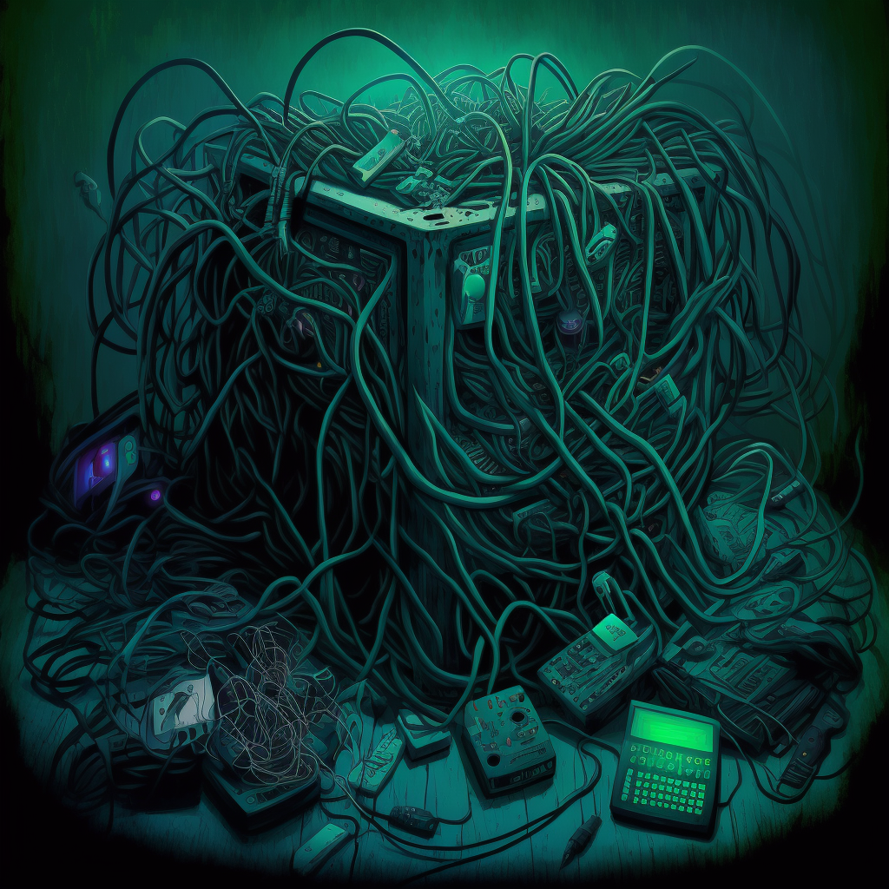
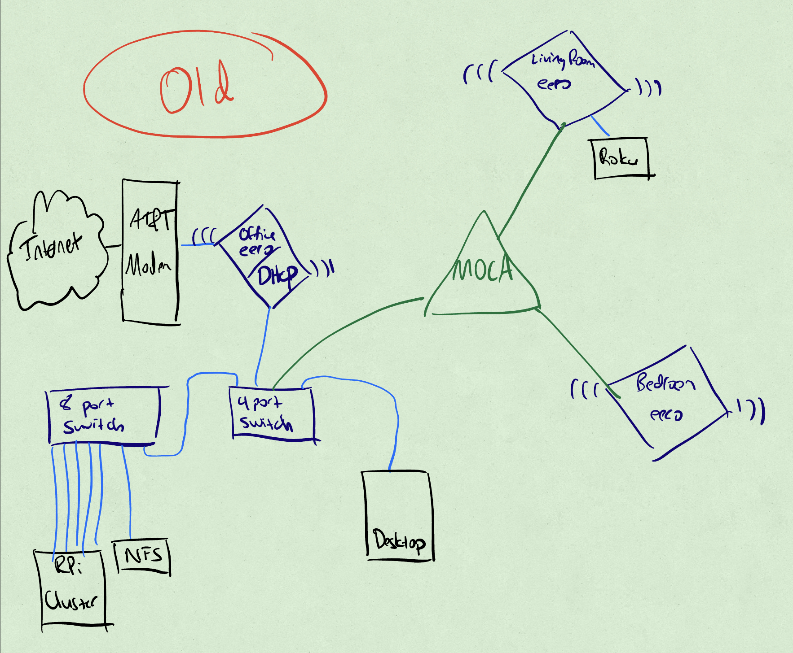
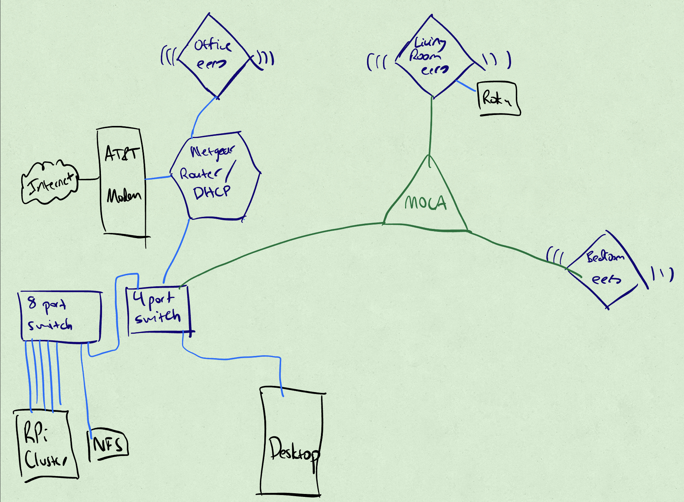
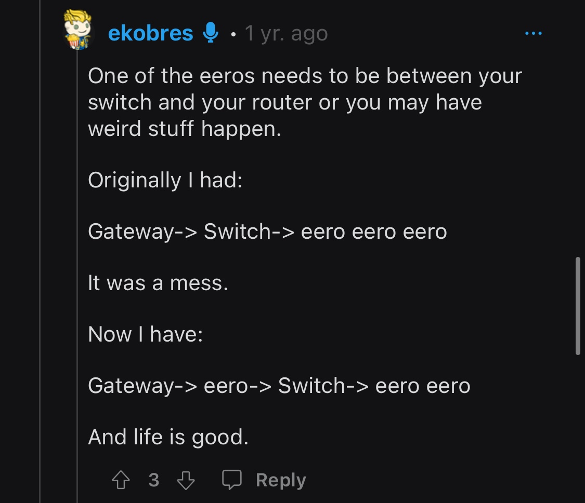
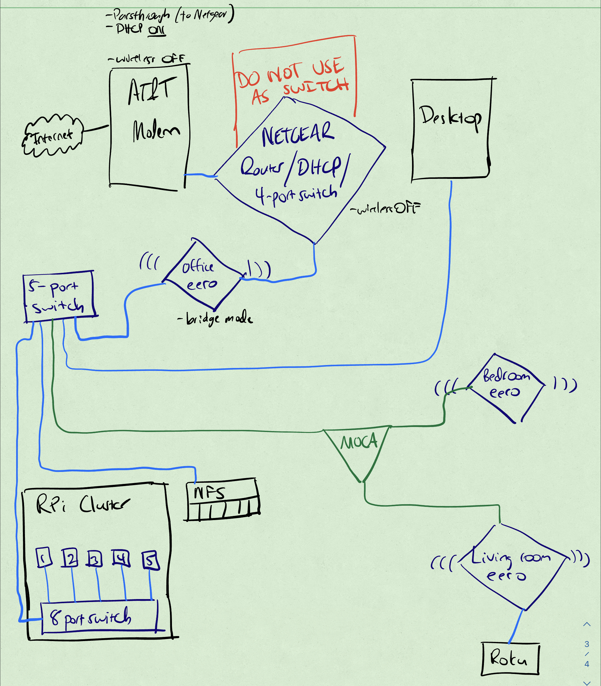

This article is part of a series about installing and configuring a Mastodon instance on a cluster of Raspberry Pi computers running k3s. To go back to previous articles in the series, try any of the links below:
- Introduction
- Part I: My home network topology (this post)
- Part II: The Mastodon Helm chart
- Part III: Configuring and installing prerequisites
- Part IV: The waking nightmare that is Let’s Encrypt
- Part V: Actually installing Mastodon
- Conclusions
Admittedly, this post in the series will be less “here’s how to spin up your own instance” than “here’s why I had so many problems that are specific just to me”, so if you have a solid handle on your own home network topology and/or are a DNS savant, feel free to skip this post.
For the rest of us mere networking mortals, let me walk you through a network hiccup that has been stymieing my attempt at an honest-to-goodness homelab kubernetes cluster for the better part of the last couple years.
Thanks a lot, Bezos
During the height of the pandemic in summer 2020–and somewhat in preparation for the birth of our daughter–I performed some long-overdue home network upgrades. This included 1) switching over to fiber internet, and 2) upgrading to a mesh network, rather than the janky router-plus-extender setup that honestly never really worked all that well. The router itself was already 5+ years old (purchased when we first moved into the house), so it needed an upgrade anyway.
At the recommendation of some friends, I went with eero. Honestly, I’d still recommend it: it’s been rock-solid, with no problems between my Apple devices (MBP, iPad Pro, and iPhone), my wife’s Android+Windows devices (Surface, Pixels), and our myriad internet-of-sh!t devices strewn throughout the house. Literally zero problems, which I honestly can’t even say for our old router.
…with, I suppose, one exception: putting the eeros into bridge mode.
Bridge mode is not what you think it is
As far as I’m aware, across all devices–from ISP modems to VirtualBox to Docker to home routers–the term “bridge mode” has a common intuition: it means the device that has been placed into bridge mode relinquishes any intelligent packet organizing methods it may have been using before and simply acts as a simple “bridge” between whatever entities it is connected to. As such, it doesn’t really care what those entities are, it just passes traffic between them.
Not so with eeros.
To illustrate, here is what my home network looked like before starting any of this craziness.

This setup worked, except… see that Raspberry Pi cluster in the bottom left? That’s where I installed k3s for tinkering, but “tinkering” is pretty much all anything amounted to, because eeros have an odd limitation when it comes to port forwarding: they don’t allow IP-based service forwarding, or at least, service forwarding that is based solely on IP addresses; they also require MAC addresses. When dealing with ephemeral services created by kubernetes clusters on floating IP ranges, there aren’t associated MAC addresses with these services, which makes it impossible to use software-based load balancers like metallb, and therefore impossible to deploy multiple services that use similar configurations–like, say, multiple websites: Mastodon and something else.
So the first thing I had to do, were I to run my own instance, was to figure out a network configuration that would allow me to do IP-based port forwarding. I recalled that my old router had this ability, so I figured: let’s just pull that out of retirement and use it purely for port forwarding!
Following was my first attempt. Note the major changes: the router has taken the place of the “main” eero as connecting directly to the ISP modem, and what was formerly the “main” eero is now just a wireless access point, connected to nothing except the router.

Suffice to say, this didn’t work. I mean, it kind of worked: the Raspberry Pi cluster was getting the right traffic forwarded to it. But seemingly random devices on the network would, suddenly and for no reason I could discern, disconnect and refuse to reconnect unless the entire network was rebooted.
Not exactly a tenable situation. So I reverted to the previous configuration where the eeros were in charge while I tried to figure out what was going on.
Fast forward about 8 months. I finally, finally found this post on Reddit (because why would eero have it in their technical support documents?) from a couple years ago, with this critical element:

Apparently, even in bridge mode, there has to be at least one eero that can “see” the entirety of your home network (i.e., all incoming traffic should pass through it).
This… made absolutely no sense to me, as it directly contravened my understanding of “bridge mode”. But I went with it, and retooled my network to follow this new bit of information.
Here was my next attempt. Like my previous attempt, the router is connected directly to the ISP model. However, unlike my previous attempt, what was the “main” eero in the original configuration–while still connected to the router–now sits between the router and the entire rest of the home network, rather than just the router and… whatever devices deign to connect wirelessly to it.

This configuration, while still strange to me, officially works–or at least, it’s worked for the past few months with no issues.
Load balancers: green
With the issue of the k3s Raspberry Pi cluster being able to receive incoming traffic from the wider internet effectively resolved, I could now undertake the process of installing a Mastodon instance on the cluster with gusto.
In the next post, we’ll look at the Mastodon Helm chart in all its glory. Stay tuned!
Citation
@online{quinn2023,
author = {Quinn, Shannon},
title = {Mastodon, {Part} {I:} {My} Home Network Topology},
date = {2023-01-23},
url = {https://magsol.github.io/posts/2023-01-23-mastodon-home-network-topology/},
langid = {en}
}